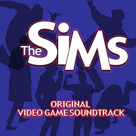

아무리 오랜 세월이 지나도 몇몇 이들에게 꾸준히 사랑받는 명작게임들이 있다. 미스트(Myst)나 폴아웃1(Fallout), 네버후드(Neverhood), 엑스컴: 유에포 디펜스(X-Com: UFO Defense), 둠 3D(Doom 3D), 듀크뉴켐 3D(Duke Nukem 3D), 공포의 저택(Maniac Mansion, 매니악 맨션), FTL과 같은 작품들이 다 이 범주에 속한다고 보면 된다.
이들이 수많은 다른 게임들을 제치고 지금까지도 게임의 역사에 한 획을 그은 대작으로 평가받는 이유는 제각각 다르겠지만, 그 중 가장 공통적인 이유를 들라고 한다면 나는 주저 않고 "추억"이라고 말할 것이다.
어느 게임이나 하다 보면 추억이 쌓이지 않겠냐고 할 수도 있겠지만, 나는 게임에 따라 추억의 감정을 특히 잘 유발하는 것도 있고, 그렇지 않은 것도 있다고 생각한다. 왜냐하면 게임 속에서의 추억은 게임 속의 정적인 요소들 에게서 주로 파생되기 때문이다. 정적인 요소가 부족한 게임은 지나치게 단편적이기 때문에 게이머의 뇌리 속에 추억의 형태로 자리잡기가 힘들다.
여기서 말하는 정적인 요소들이란 다음과 같은 것들을 뜻한다.
레고아일랜드의 섬, GTA의 맵 등과 같이 게임 속에서 일종의 고향집 역할을 하는 가상의 장소들이 있다. 이는 플레이어로 하여금 본인의 인생을 특정 장소에 귀속시키게 함으로써 게임 속 공간을 향한 애착심을 유발한다.
캐릭터 만큼 플레이어의 뇌리 속에 깊숙이 꽂힐 수 있는 추억의 형태는 없다고 보면 된다. 그만큼 게임 속에서 반복적으로 보여지는 캐릭터는 게임을 하는 이에게 있어서 매우 큰 의미를 가진다. 슈퍼마리오, 와리오 랜드, 동키콩, 소닉, 레이맨, 툼레이더, 포켓몬, 크로노트리거, 젤다의 전설, 파이널 판타지, 삼국지, 환세취호전과 같이 캐릭터를 중심으로 이야기가 진행되는 게임이라면 더더욱이 그렇다.
게임 속에 등장하는 음악이나 이미지들은 그 자체가 독립적인 예술작품과도 같기 때문에, 게임의 흐름과 더불어 플레이어에게 강렬한 인상을 남길 수 있다. 몇몇 유명 게임들은 배경음악이 너무나 훌륭하여, 아예 배경음악을 전문적으로 연습해 연주하는 악단까지 따로 있을 정도이다. 그만큼 게임 속에 들어있는 예술적 요소들은 추억을 형성시키는 데에 있어서 핵심적인 역할을 한다.
ThingsPool